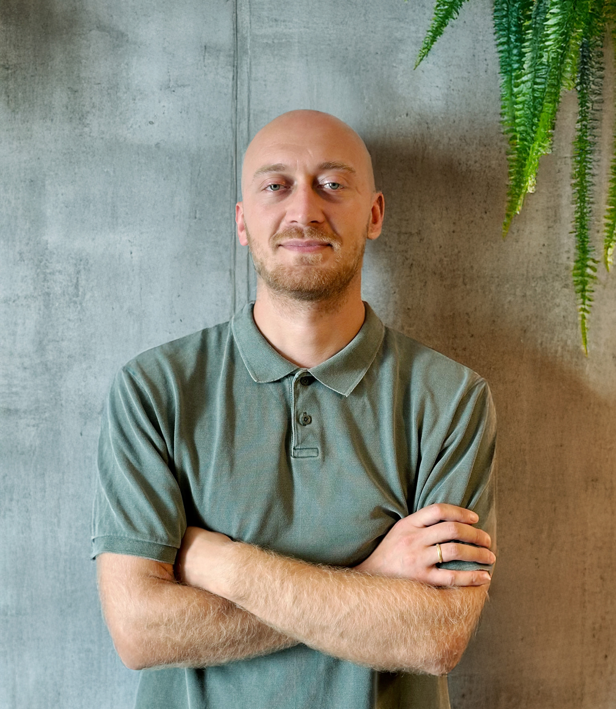

Selected Research Outputs
Contact
Phone(+39) 351 319 3505
InstitutionEuropean University Institute, Florence

I am a PhD researcher in Political Science at the European University Institute (EUI) in Florence. My research focuses on democratic erosion and political behavior, with a particular emphasis on quantitative methods including experimental and quasi-experimental designs. Before joining EUI, I led survey research and impact evaluations at the Caucasus Research Resource Center (CRRC-Georgia) and taught research methods at several Georgian universities.